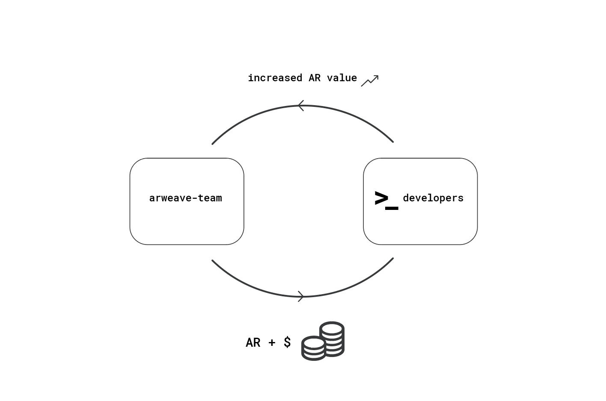

We fund people like you to pursue your vision for applications, integrations, and beyond with the Arweave protocol.
All you need to do is tell us about your great idea, and we will fund it. Seriously. Start the conversation now.
Looking for storage for your archives? Look no further. Museums, archives, historic sites, and online libraries can apply to the archival grants program to receive free storage and assistance from the Arweave team.
Projects ranging from blogging platforms to games have been built with our assistance. Here are some of the grants we are currently funding.
The Arweave is a community owned and operated initiative. The website you are looking at right now was written by the team that founded the Arweave protocol. Upon launching the protocol, we claimed a share of the tokens in the network. Aside from this stake, we hold no special position or authority in the ecosystem – we are equal community members. The business model of our team is to invest the proceeds of the gradual sale of these tokens into projects and companies that are building inside the Arweave ecosystem. In turn, these projects increase the utility of the Arweave network and subsequently the value of the Arweave tokens that we hold. This mechanism creates a sustainable business model that enables us to empower Arweave community members to grow the new, decentralised web.
We back projects of all types and sizes – from open source apps, to DAOs, to traditional companies. If you have a good idea you want to pursue, we want to back you. Start a conversation with us now.
Here are some of the grant themes we are especially interested in:
Building Information Gold: Information is the new oil. As such, there is no better resource to back a currency with. Build apps and bots to help us fill the Arweave with permanent and verifiable records of all of humanity's valuable knowledge and history.
Arweave for businesses: Permanent and verifiable storage opens immense avenues for value creation in the business world. From verifiable legal contract storage, to data archiving solutions that set a new standard for data integrity, we want to invest in and help companies that build on the Arweave protocol.
An open source web: Once permaweb services are launched, their developers never have to pay for hosting them again. Users of permaweb apps can have confidence that the service will not degrade or change under their feet. This fundamentally changes the game for web service development, allowing us to collectively build an open source web. Read more here.
Preserving history: The Permaweb is designed to prevent the destruction of history. Once something is uploaded, it cannot be deleted, altered, or lost. Store valuable cultural and historical information on it to ensure that it remains available for future generations.
These are the Arweave founding team’s current expectations for how the ecosystem will develop in the short term, but we are always open to your ideas. Simply share your suggestions with us.